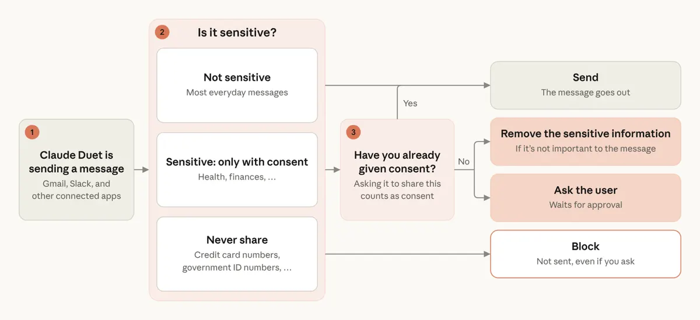

煞車裝在模型之外：Claude Duet 的安全、隱私與資安設計
導讀原文：Claude Duet 安全、隱私與資安說明——研究預覽期的防護設計，含官方自承還在迭代的部分
Duet 是研究預覽中的 agent：用雲端電腦替你做事，關掉 app 仍持續運行。這篇講的不是它能做什麼，而是它被設計成做不到什麼。
交辦方式見產品篇；本篇只看防護。
本站重繪；原文 Figure 1（Approval flow）為官方版本。畫的是存取權界線，非部署位置或先後。檢查放在模型外，是為了讓頁面藏的指令影響不了結果。
前傳：2025 年 safe and trustworthy agents 框架先立下「人放在控制位」，之後兩篇接著說「沒有單一防線就夠」「模型內的防護無法獨立存在」。
哪些動作擋在哪一關
這個動作，被哪一關擋下？
本站整理；原文分散在三段敘述，未給此分流（歸類為編輯歸納）。
你不在時跑的 routines 套用同一套防護。
請示頻率是刻意校準的：審批疲勞嚴重，請求太多會教人有時未經充分考慮就跳過。購物另走一次性卡號——限該商家與金額，你在 Link app 看到品項與總額才批准，真卡號不給 Duet，也不給商家。
往外掃一遍，往內鎖住憑證
外寄訊息先過獨立於主模型的分類器，敏感資訊原文稱「兩級」（需同意與絕不分享）；被擋下時 Duet 可改寫成不含敏感內容的版本，再交你批准。

| 步驟 | 原文做法 | 邊界 |
|---|---|---|
| 1 輸入 | 在 Claude app 內的表單打密碼 | 只在 app 內、你主動登入時出現 |
| 2 加密 | 以單次金鑰加密 | 金鑰只存在安全雲端瀏覽器機器，只用一次 |
| 3 鍵入 | 加密後原封不動交給瀏覽器打進網站 | 模型看不到、無法儲存、無法複述 |
| 下一步 | 1Password：Duet 提出請求、你批准 | 即將推出；憑證直送瀏覽器，不經模型 |
→ 可橫向滑動
官方對成熟度說得直白：仍在 research preview，這些防護偶爾會漏掉該擋的、也會誤標無害的訊息，所以只與批准機制並行，不作唯一防線。
釣魚因此少一條路：Duet 不保管憑證，騙不出密碼；登入表單也只在 app 內出現，別處索取密碼的「Claude Duet」都不是正版。
你看得到，也關得掉
| 項目 | 原文行為 | 邊界 |
|---|---|---|
| 任務 | 清單＋每任務獨立頁，可中途 steer | 不必等它跑完 |
| 記憶 | 對話歷史與記憶跨任務延續 | 直到你刪除或重置 |
| 連接的 app | 一處關閉、兩處同時關 | 新存取即刻停；學到的留到重置記憶 |
| 帳號 | 刪除會清掉 Duet 儲存的一切 | 原文未給清除時程 |
→ 可橫向滑動
它同時讀你 Claude 帳戶原有的記憶，更早對話裡記住的細節一樣看得見。
帶走三件事
煞車裝在模型之外。檢查、批准、憑證都不在模型手上。
「問幾次」就是設計題。審批疲勞會把防護磨成連點。
預覽期的誠實也是設計。自承漏判誤判，所以並用批准。
同一主題的其他館藏
導讀為本站編輯內容（AI 摘解自官方原文與館藏重點，非官方文件）；引述做法與數據均出自原文，屬 Anthropic 自述；圖解為本站重繪，另收錄 1 張原文官方圖，小標為編輯整理。內容經對照原文的獨立事實審查後發布。